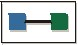
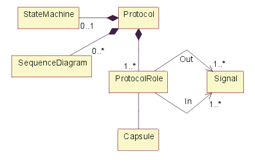
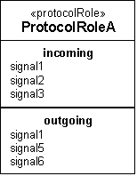
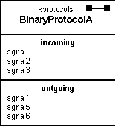
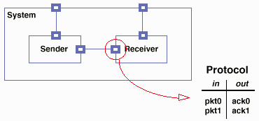

Artifacts >
Artifacts >
 Analysis & Design Artifact Set >
Analysis & Design Artifact Set >
 Design Model... >
Protocol
Design Model... >
Protocol
Artifacts >
Analysis & Design Artifact Set >
Design Model... >
Protocol
Artifact:
| |||||||||||||||||||||||||
|
 Protocol |
A common specification for a set of Artifact: Capsule ports. |
|
UML representation: |
Class, stereotyped «protocol». |
|
Role: |
|
|
Optionality: |
Used only if capsules are used. |
|
More information: |
|
| Input to Activities: | Output from Activities: |
Protocols allow the specification for a set of Artifact: Capsule ports to be defined and reused. The protocol defines a set of incoming and outgoing messages types (e.g. operations, signals), and optionally a collaboration (usually consisting of a set of sequence diagrams, see Guidelines: Sequence Diagram) which defines the required ordering of messages and a state machine (described by a set of statechart diagrams, see Guidelines: Statechart Diagram) which specifies the abstract behavior that the participants in a protocol must provide.
A protocol is a specification of desired behavior that can take place over a connector—an explicit specification of the contractual agreement between the participants in the protocol. It is pure behavior and does not specify any structural elements. A protocol comprises a set of participants, each of which plays a specific role in the protocol.
Each such protocol role is specified by a unique name and a set of signals that are received by that role as well as the set of signals that are sent by that role (either set could be empty). As an option, a protocol can also have a specification of the valid communication sequences; a state machine may specify this. Finally, a protocol may also have a set of prototypical interaction sequences (these can be shown as sequence diagrams). These must conform to the protocol state machine, if one is defined.
Binary protocols, involving just two participants, are by far the most common and the simplest to specify. One advantage of these protocols is that only one role, called the base role, needs to be specified. The other, called the conjugate, can be derived from the base role simply by inverting the incoming and outgoing signal sets. This inversion operation is known as conjugation.

Composition of «protocol» class.
As noted in above figure, a protocol typically contains one or more sequence diagrams which illustrate the valid message exchange sequences specified by the protocol. The protocol also consists of a set of incoming (request) messages and a set of outgoing (response) messages. An optional state machine can be used to specify the behavior that participants in the protocol must support.
In addition to the relationships defined above, the following properties are defined:
|
Property Name |
Brief Description |
UML Representation |
|
Name |
The name of the protocol. |
The attribute "Name" on model element. |
|
Brief Description |
A brief description of the role and purpose of the protocol. |
Tagged value, of type "short text". |
A protocol role is modeled in UML by the «protocolRole» stereotype of ClassifierRole. This stereotype has two dependencies to Signal: one for incoming and one for outgoing signals. (This is a property of UML classes in general). Like any classifier, it may also have an associated state machine that captures the local behavior of the protocol role. This state machine has to be compliant with the protocol state machine.
A protocol is modeled in UML by the «protocol» stereotype of Collaboration with a composition relationship to each of its protocol roles representing the standard relationship that a collaboration has with its "owned elements". This collaboration does not have any internal structural aspects (i.e., it has no association roles). Like all generalizable elements, a protocol can be refined using standard inheritance. The state machine and collaborations associated with a protocol are inherited directly from Classifier.
Protocol roles can be shown using the standard notation for classifiers with an explicit stereotype label and two optional specialized list compartments for incoming and outgoing signal sets, as shown in the figure below. The state machine and interaction diagrams of a protocol role are represented using the standard UML notation.

Protocol role notation - class diagram.
A special shorthand notation is provided for binary protocols since they are by far the most common. As noted earlier, for binary protocols, only the base role needs to be specified. Furthermore, since the role state machine and the protocol state machine are the same in this case, only the protocol state machine needs to be defined. For this reason, the notation for binary protocols combines elements of the protocol role notation by including directly the incoming and outgoing signal lists with the protocol class. The protocol stereotype and its corresponding icon help to differentiate this from the protocol role notation.

Notation for binary protocols – class diagram
Finally, a protocol usage may also be indicated with a standard collaboration use diagram represented by a dashed oval with dashed lines for each of its roles.

Example of Protocol for Receiver; a Connector links Sender and Receiver.
The protocols are architecturally significant, so all protocols should be identified and described during the elaboration phase. Adjustments to the protocols may occur during the construction phase, but proposed changes are cause for concern and should be examined closely.
The software architect is responsible for the integrity of the protocol, ensuring that the protocol definition is complete and consistent.
Protocols are a part of the 'capsule' pattern (see Artifact:
Capsule), a specific pattern for representing and resolving thread of
control issues. They are most useful in the context of a system in which
concurrency concerns are dominant design issues.
|
Rational Unified
Process
|